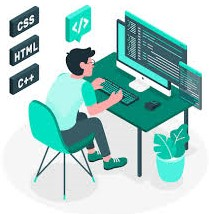

Hi , My Name Is Rashid
I Am A Developer

Work Experienced
HTML Developer. (2022-2023)
I am a proficient web developer with a solid foundation in both front-end and back-end technologies, enabling me to create dynamic, responsive, and user-friendly websites and applications. With a strong command of HTML, CSS, and JavaScript, I build visually appealing interfaces that prioritize user experience and accessibility. I am skilled in frameworks such as React, Angular, and Vue, allowing me to efficiently develop interactive and high-performance front-end applications. On the back end, I have experience with server-side languages and technologies like Node.js.
TypeScript Developer. (2023-2024)
I am a skilled TypeScript developer with a strong grasp of the language's core features and advanced functionalities. I am proficient in using TypeScript’s static typing to build robust, maintainable, and error-free codebases. By leveraging TypeScript’s interfaces, generics, and type inference, I can design scalable and flexible applications that align with modern development standards. I am well-versed in both object-oriented and functional programming paradigms within TypeScript, and I have experience integrating TypeScript with popular frameworks.